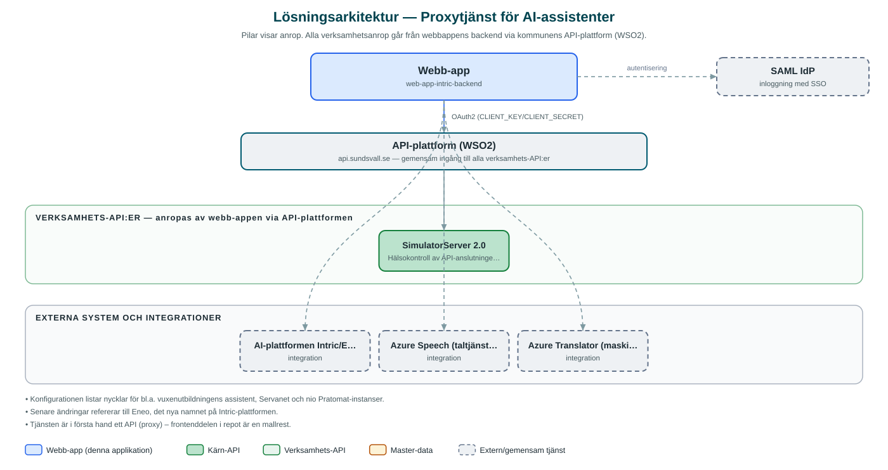

Proxytjänst för AI-assistenter
Gemensam serversidestjänst som förmedlar säker trafik mellan kommunens AI-chattar och AI-plattformen, inklusive tal- och översättningstjänster.
Om applikationen
Tjänsten är den gemensamma bakomliggande motorn för kommunens AI-assistenter. Den tar emot frågor från chattwidgets och appar (till exempel serviceassistenter och Pratomaten) och vidarebefordrar dem till AI-plattformen Intric/Eneo, utan att API-nycklarna exponeras i webbläsaren. Varje assistent har en egen API-nyckel som hanteras centralt här.
Utöver själva chattflödet (assistenter, sessioner, konversationer, filuppladdning, kunskapsgrupper och utrymmen) tillhandahåller tjänsten tillgång till Azures taltjänster och maskinöversättning, så att chattar kan erbjuda tal-till-text och översatta svar.
Tjänsten kan köras i internt eller externt läge. Anrop från inbäddade chattar verifieras med en beräknad hash, och det finns stöd för SAML-inloggning samt begränsning av anropstakt för att skydda mot överbelastning.
Det här stödjer applikationen
- Förmedling till AI-plattform – Vidarebefordrar frågor och svar mellan chattklienter och AI-plattformen Intric/Eneo.
- Central nyckelhantering – API-nycklar för respektive assistent (bl.a. vuxenutbildning, Servanet och flera Pratomat-instanser) hålls på servern.
- Tal och översättning – Utfärdar åtkomst till Azure Speech för tal-till-text och förmedlar översättningar via Azure Translator.
- Sessions- och filhantering – Hanterar konversationer, sessioner, filuppladdningar, kunskapsgrupper och utrymmen i AI-plattformen.
- Skydd och åtkomstkontroll – Hashverifiering av inbäddade klienter, SAML-stöd samt begränsning av anropstakt.
Teknisk dokumentation
Nedan beskrivs hur applikationen är uppbyggd, vilka API:er den använder och vad som krävs för att driftsätta den. Informationen är härledd ur källkoden och dess konfiguration på GitHub.
Arkitektur

Applikationen består av en webbaserad frontend (Minimal Next.js-frontend (från mall)) och en backend (Node.js med Express och routing-controllers samt Prisma) som utvecklas i samma kodbas. Verksamhetsanrop går via kommunens gemensamma API-plattform (WSO2) – frontend pratar aldrig direkt med underliggande system. Inloggning: Hashverifiering för inbäddade chattklienter; SAML (SSO) konfigurerbart för internt läge. Övriga integrationer som förekommer i koden: AI-plattformen Intric/Eneo, Azure Speech (taltjänster), Azure Translator (maskinöversättning), SAML IdP, WSO2 API-gateway.
Teknikstack
- Frontend: Minimal Next.js-frontend (från mall)
- Backend: Node.js med Express och routing-controllers samt Prisma
- Test: Jest
API-beroenden
Applikationen konsumerar följande API:er via kommunens API-plattform. Versionerna är hämtade ur källkodens API-konfiguration.
| API | Version | Användning |
|---|---|---|
| SimulatorServer | 2.0 | Hälsokontroll av API-anslutningen (enligt api-config). |
Konfiguration och driftsättning
- Miljöfil .env.example.local med INTRIC_API_BASE_URL, användaruppgifter och salt för hashverifiering
- En API-nyckel per ansluten assistent (INTRIC_APIKEY_*)
- Azure-nycklar för tal och översättning (AZURE_REGION, AZURE_SUBSCRIPTION_KEY, AZURE_TRANSLATOR_KEY)
- SAML-certifikat och nycklar för inloggning
- Läge INTERNAL/EXTERNAL samt inställningar för anropsbegränsning (rate/spike limit)
Noterbart ur källkoden
- Konfigurationen listar nycklar för bl.a. vuxenutbildningens assistent, Servanet och nio Pratomat-instanser.
- Senare ändringar refererar till Eneo, det nya namnet på Intric-plattformen.
- Tjänsten är i första hand ett API (proxy) – frontenddelen i repot är en mallrest.
Källkod
Källkoden är öppen och finns hos Sundsvalls kommun på GitHub. I källkodsförrådet finns även instruktioner för att klona, konfigurera och starta applikationen i egen miljö.